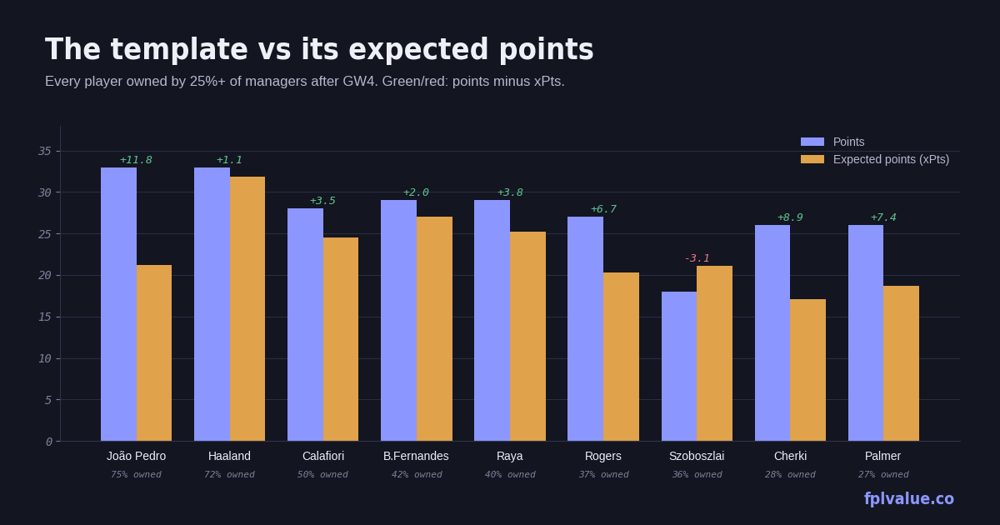

The template is mostly right
The GW3 check found four highly-owned players behind their expected points and argued two of them were fine. Four gameweeks in, the template has tightened to nine players over 25% ownership and the picture is clearer: eight are at or ahead of expected, and the one laggard is a Liverpool midfielder whose problem is competition for returns, not performance. Numbers are season totals after GW4, from the dashboard.

The template, ranked by ownership
| Player | Pos | Price | Own | Pts | xPts | Δ | xGI | GW3–4 |
|---|---|---|---|---|---|---|---|---|
| João Pedro CHE | FWD | £7.8m | 75.2% | 33 | 21.3 | +11.8 | 2.36 | 13 |
| Haaland MCI | FWD | £15.5m | 72.3% | 33 | 31.9 | +1.2 | 3.84 | 18 |
| Calafiori ARS | DEF | £5.8m | 50.1% | 28 | 24.5 | +3.5 | 1.19 | 8 |
| B.Fernandes MUN | MID | £12.0m | 41.8% | 29 | 27.0 | +2.0 | 3.41 | 4 |
| Raya ARS | GKP | £6.0m | 40.3% | 29 | 25.2 | +3.8 | — | 17 |
| Rogers CHE | MID | £7.7m | 37.4% | 27 | 20.3 | +6.7 | 2.55 | 14 |
| Szoboszlai LIV | MID | £7.0m | 36.4% | 18 | 21.1 | −3.1 | 2.09 | 6 |
| Cherki MCI | MID | £7.8m | 28.5% | 26 | 17.1 | +8.9 | 2.00 | 4 |
| Palmer CHE | MID | £9.7m | 26.8% | 26 | 18.6 | +7.4 | 1.79 | 6 |
The interesting movement is at the bottom. Mbeumo has fallen out of the template (22.9%, from 32%) after 283,000 sales in GW3 — the week before he returned in both games. Calvert-Lewin is out at 22.3%. In come Cherki and Palmer, both Δ +7 or more, both bought on the back of hauls rather than underlying numbers. Cherki's 218 minutes in four games is the number his 28.5% owners should be looking at, not his 26 points.
The two premiums are doing what premiums should. Haaland has the highest xGI in the league (3.84) and 18 points across GW3–4, with his 33 points almost exactly matching his 31.9 expected — the rare case of a player whose output you can simply trust. Bruno Fernandes is second on xGI at 3.41 and had a blank fortnight (4 points), which is precisely the situation where you don't sell: his expected points over GW3–4 were 6.8 to his actual 4, and United's fixtures from GW6 (Spurs, Leeds, Bournemouth) are fine.
Szoboszlai 36.4% owned · £7.0m · Δ −3.1
The one template player behind expected, and the gap is modest. His underlying numbers are decent — 2.09 xGI, 21.1 xPts — but he has one goal, no assists, and 6 points from the last two games. The GW3 check suggested Gakpo and Foden as same-price alternatives. Gakpo has since scored 12 in two and risen to £7.2m; Foden is suspended until 17 October. So what does the £7.0m bracket look like now?
| Alternative | Price | Own | Pts | xPts | xGI | xGI/90 |
|---|---|---|---|---|---|---|
| Tavernier BOU | £6.1m | 5.2% | 29 | 26.4 | 2.51 | 0.65 |
| Dewsbury-Hall EVE | £6.5m | 5.0% | 17 | 15.8 | 1.11 | 0.28 |
| Anderson MCI | £6.3m | 4.2% | 13 | 15.1 | 0.74 | 0.21 |
| Rayan BOU | £6.4m | 1.7% | 8 | 14.1 | 0.95 | 0.25 |
| Neto CHE | £6.5m | 1.4% | 12 | 12.0 | 1.05 | 0.38 |
One name stands out and it's £0.9m cheaper than the player he'd replace. Marcus Tavernier has out-scored Szoboszlai 29 to 18 on a higher xGI (2.51 to 2.09) and a higher expected total (26.4 to 21.1), with 18 points across GW3–4, and 5.2% of managers own him. Bournemouth's fixtures are mixed until GW9 and then soften for six straight. Below him the bracket is thin: none of the other under-10%-owned midfielders between £6.3m and £7.3m gets near Szoboszlai's numbers. Verdict: Tavernier is the like-for-like upgrade that also banks £0.9m — enough, with the right sale elsewhere, to turn a £4.5m defender into Bogle or a £5.0m one into Gvardiol. If you'd rather go cheaper still, two midfielders at £5.6m–£5.8m also beat anything else in the £7m bracket: Groß (33 points, 2.27 xGI, 18.4% owned) and Le Fée (13 points, 2.88 xGI, 4.0% owned). Szoboszlai to Le Fée frees £1.2m, buys the fourth-highest xGI of any midfielder in the game, and gets you a Sunderland player right before their fixtures flip from City away to Brighton, Bournemouth, Leeds and Coventry. That's the template move worth making at the break.
The wider bracket check
One more thing the four-game sample allows: a look at whether the template is over-paying by position. Among forwards with 240+ minutes, the best xGI per 90 under £7m is Barry (0.86) at £5.6m and 6.5% owned; the template's budget forward, Calvert-Lewin (0.70 xGI/90, 22.3%), has scored 20 to Barry's 14 from weaker chances. Among defenders under £5m, Bogle (£4.5m, 2.8%) and Davis (£4.0m, 6.1%) both have higher xPts than Calafiori (£5.8m, 50.1%). The premium defender is doing fine — 28 points, three clean sheets — but the £1.3m–£1.8m the template spends on him over Bogle is buying Arsenal's defence, not extra attacking return.
Methodology: template defined as ownership ≥ 25%. Alternatives are the same position, priced within £0.7m below to £0.3m above, owned by under 10%, available, and with 240+ minutes, ranked by xPts. xPts and Δ as defined on the metrics page. Data: FPL API after GW4.